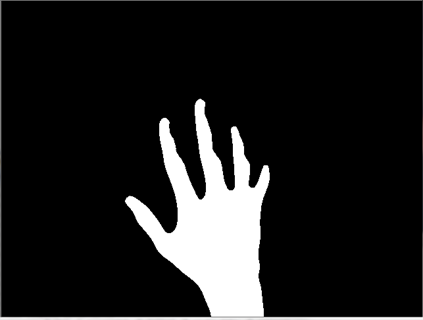

Szegmentálás
Háttérkivonás
- "b" gombbal aktuális háttér lementése (kéz nélkül)
- Az egyes frame-k kivonása a háttérbõl
- Küszöbölés
2D normalizált színtéren alapuló szegmentálás
- RGB -> 2D normalizált szintér konverzió
- Eredmény:

Az eredeti kép és a differencia

Szegmentált kép


RG szintérben történõ szegmentálás (mesterséges fény mellett)

A szegmentált kép mediánszûrés után
Kontúr, konvex burok, ujjhegyek
cvFindContours() fgv. a kontúrok keresésére
cvContourArea() fgv. a kéz kontúr megtalálására
Konvex burok számítása - cvConvexHull2() fgv.
Ujjhegyek keresése - konvex burok töréspontjai/ritkítás


Konvex burok

Kurzor mozgása és kattintás
Mozgatás - SetCursorPos() fgv.
- szegmentált mutató ujj koordinátáinak megkeresése
- Differencia vektor figyelése - ha túl nagy vagy túl kicsi a kurzor nem mozdul
- átlagterület figyelése - kéz terület csökkenésre egér elengedés esemény (kurzor mozgatható több mozdulattal)
- manuálisan egér érzékenység állítás
Klikkelés - mouse_event() fgv.
- MOUSEEVENTF_LEFTDOWN - bal gomb lenyomva
- MOUSEEVENTF_LEFTUP - bal gomb felengedve
- MOUSEEVENTF_RIGHTDOWN - jobb gomb lenyomva
- MOUSEEVENTF_RIGHTUP - jobb gomb felengedve
Hiányosságok
- az egérkurzor mozgatásának pontossága
- kattintás során a kéz bemozdul